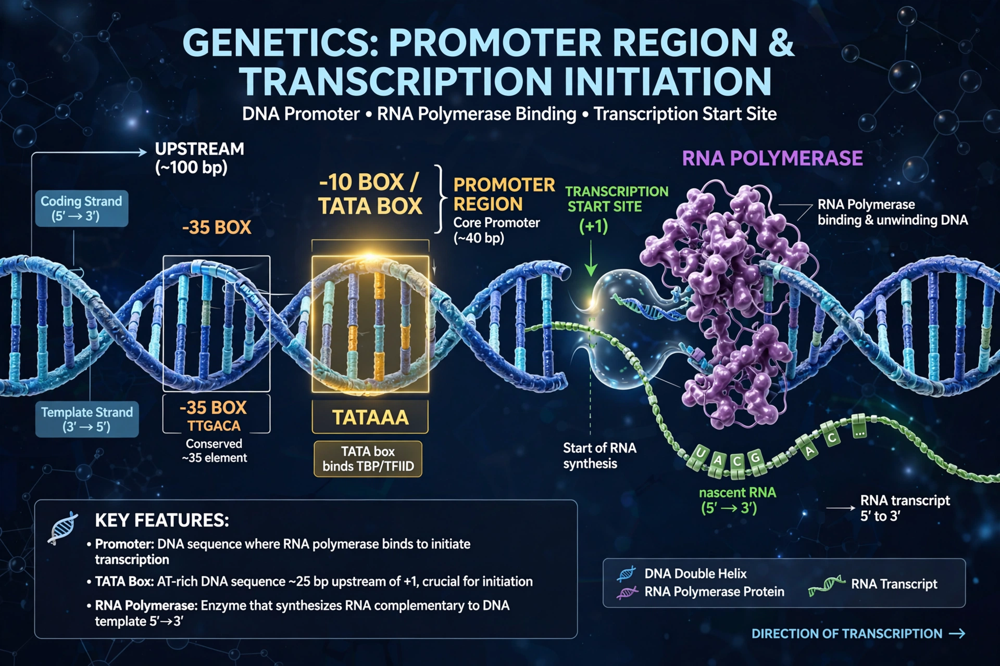

In genetics, a promoter is a sequence of DNA to which proteins bind to initiate transcription of a single RNA transcript from the DNA downstream of the promoter. The RNA transcript may encode a protein or have other functions such as tRNA or rRNA.
Promoters lie upstream (5') of the transcription start site (+1) of the genes they control. Prokaryotic promoters contain −10 (Pribnow box, TATAAT) and −35 consensus sequences recognised by sigma factors of RNA polymerase. Eukaryotic RNA polymerase II promoters often include a TATA box about 25–35 base pairs upstream, plus initiator and downstream promoter elements; CpG islands mark many housekeeping-gene promoters.
Transcription factors binding the promoter and nearby enhancers assemble the pre-initiation complex. Promoter strength determines expression level; mutations in promoters can cause disease, and synthetic promoters are widely used in biotechnology to drive transgene expression. See transcription.